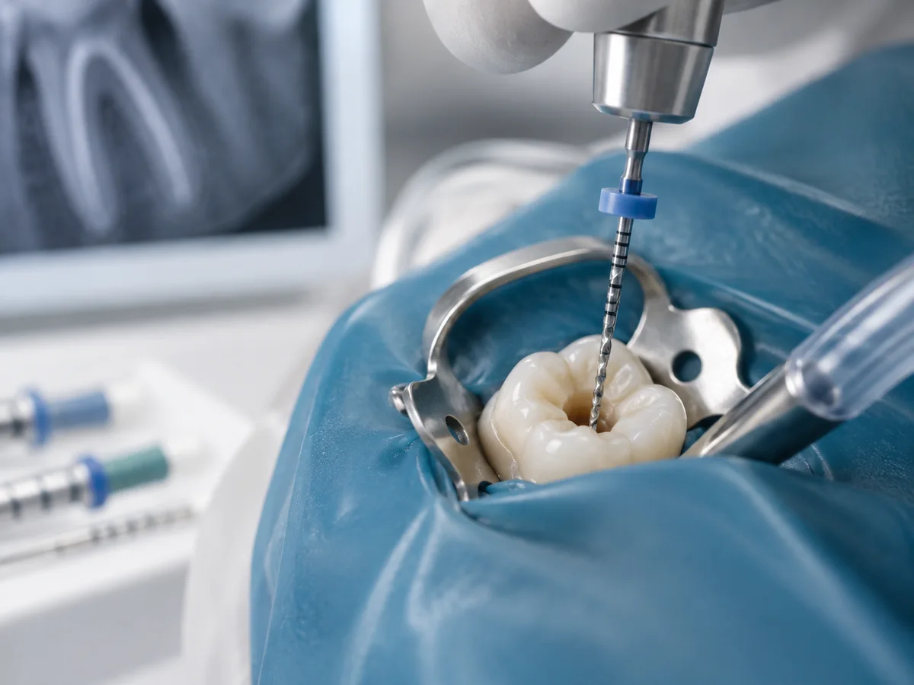
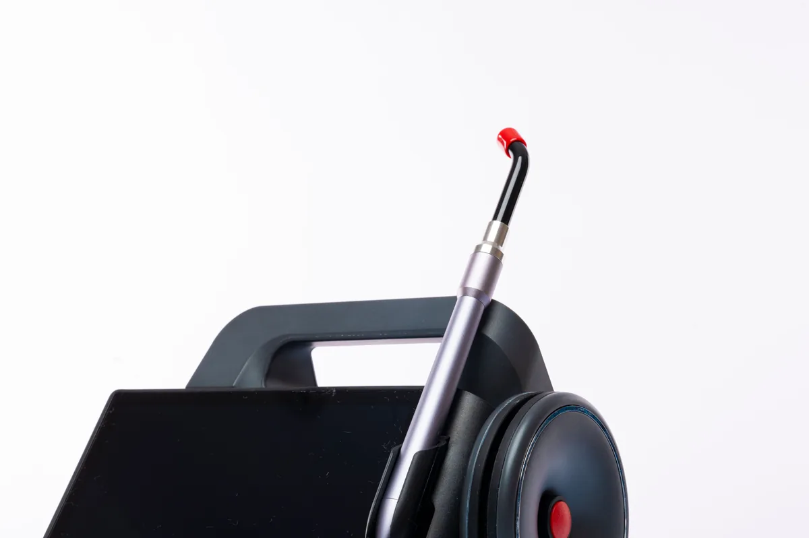

Prosthodontics
Specialist planning for crowns, bridges, dentures, veneers and implant-supported restorations, with a focus on restoring function and appearance.
Learn MoreDental services
From preventive visits to specialist treatment, Silwadi Dental Center brings general dentists and specialists together across a broad range of dental care.
Our services
Each service area links to more detailed treatment information. If you are not sure which appointment you need, contact reception and describe what you would like help with.
Specialist planning for crowns, bridges, dentures, veneers and implant-supported restorations, with a focus on restoring function and appearance.
Learn More
Specialist gum care for periodontal disease and the supporting tissues around the teeth, including non-surgical and surgical treatment when indicated.
Learn More
Diagnosis and treatment of conditions affecting the dental pulp and root canal system, including root canal therapy and retreatment.
Learn More
Specialist orthodontic care for tooth alignment and bite correction using braces, aligners, retainers and other appliances where appropriate.
Learn More
Dental care for children from infancy through adolescence, including preventive care, fluoride, sealants and restorative treatment.
Learn More
Aesthetic dental care including veneers, smile design and restorative options selected after a clinical assessment of the teeth and bite.
Learn More
Professional whitening options for suitable patients, planned after an examination to assess the teeth, existing restorations and the cause of discoloration.
Learn More
Dental laser techniques used for selected soft- and hard-tissue procedures when clinically appropriate.
Learn More
Routine examinations, professional hygiene guidance and preventive planning designed to protect teeth and gums and identify problems early.
Learn MoreAppointments
Tell reception what you would like help with and the team can guide your appointment enquiry.